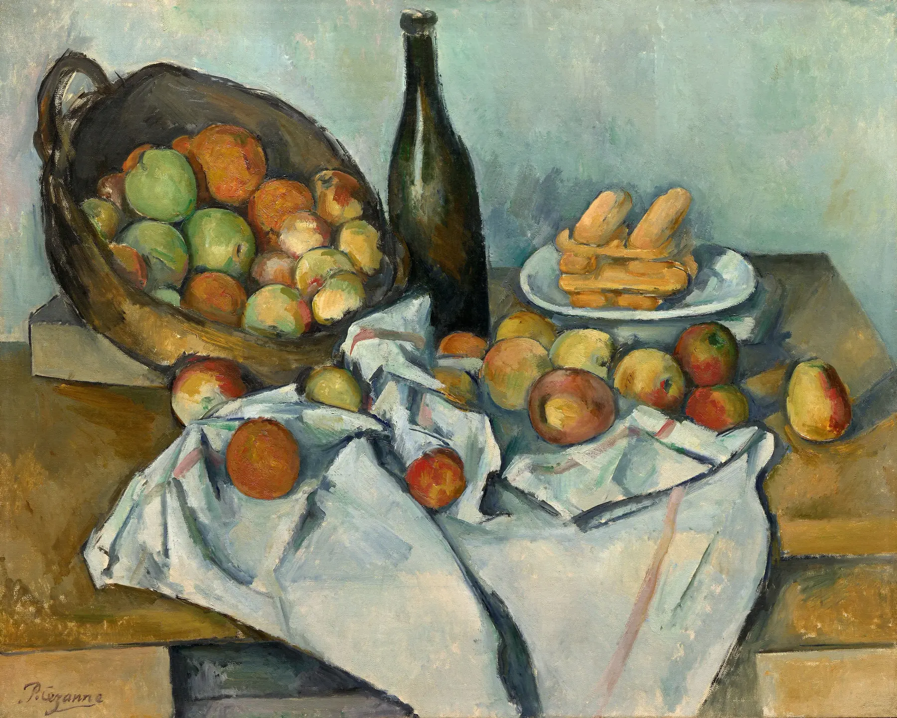
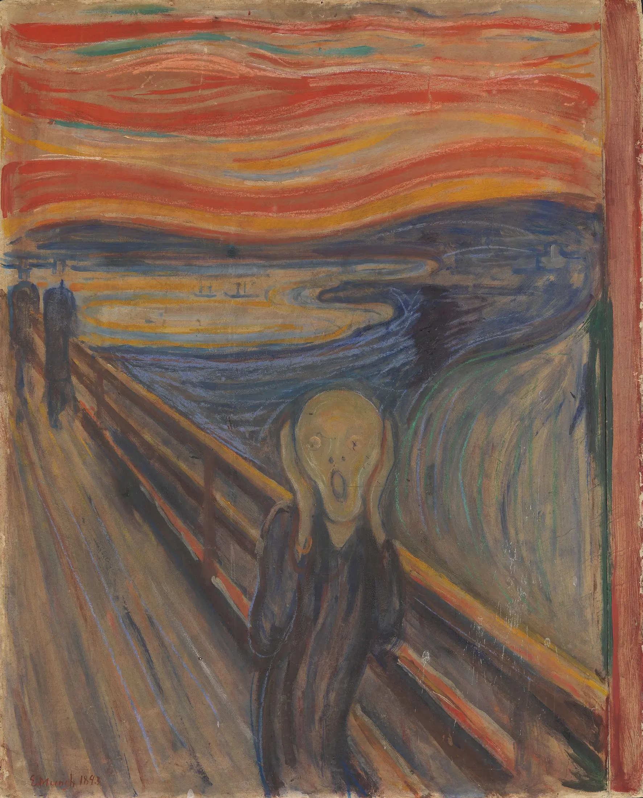

Scegli una data: appariranno evento, relazione e limite causale.
01 · Prima di sapere
Il corpo avanza
o è lo spazio a cedere?
Niente autore, titolo o movimento. Prima osserva massa, direzione e vuoti: la velocità non è ancora una spiegazione.
Sto guardando un corpo che si muove oppure uno spazio trasformato dal suo passaggio?

Scegli una zona
Un marcatore isola una relazione visibile; non attribuisce ancora una causa.
02 · La soglia dal Cubismo
Non più soltanto ricomporre.
Essere attraversati.
Il Cubismo moltiplica relazioni dentro l’oggetto; il Futurismo tenta di incorporare direzione, urto e ambiente. Non è un superamento: cambia la domanda.
Distingui le operazioni
Scegli un’operazione: la stessa superficie può conservare, moltiplicare o sacrificare informazioni diverse.
03 · Il mondo storico dell’accelerazione
La tecnica cambia l’esperienza.
Non dipinge da sola.
Tra 1870 e 1922 città, energia, media e politica modificano il campo del possibile. Un contesto non è un motore automatico delle forme.
Rete delle condizioni
Attiva un nodo per distinguere ciò che rende possibile un’esperienza da ciò che la spiega.
04 · Il manifesto come macchina
Non dice soltanto.
Recluta, provoca, ordina.
Il testo francese non è una trascrizione innocente di una versione italiana immutabile: pubblicazione, traduzione e ristampe fanno parte della strategia. Il “noi” produce il gruppo che dichiara già esistente; slogan, elenchi e nemici trasformano una poetica in evento.
Il problema non va sterilizzato
Misoginia, nazionalismo, culto della violenza e guerra non sono decorazioni retoriche. Vanno distinti dalle metafore estetiche, ma non assolti come semplice scandalo pubblicitario.
Classificatore del manifesto
Classifica ogni frase per funzione prevalente. Alcune formule agiscono su più piani: qui conta motivare la distinzione.
05 · Laboratorio del movimento
Moltiplicare non basta.
Che cosa cambia davvero?
Schema astratto originale: non imita alcuna opera futurista.
SCHEMA · posizione / velocità / accelerazione / ambiente
06 · Fotografia, cronofotografia, cinema
Registrare non significa
già interpretare.
Muybridge separa fasi; Marey tende a registrarle su un unico supporto; il cinema ricostruisce successione attraverso proiezione; i Bragaglia cercano una continuità sensibile con pose lunghe. Nessun dispositivo “inventa” da solo il Futurismo.
Le fotodinamiche dei Bragaglia sono discusse attraverso la scheda scientifica del MoMA ↗; l’immagine non è copiata perché la pagina indica un diritto di riproduzione specifico.
07 · Boccioni
Il movimento non appartiene
soltanto al corpo.
Quattro livelli, nessuna scorciatoia
Scegli un livello per non confondere l’opera con il manifesto o con una lettura successiva.
Opera necessaria, riproduzione non locale
La città che sale, 1910
Il grande dipinto trasforma lavoro urbano, cavallo, luce e folla in una scena monumentale. La macchina non domina l’immagine: al centro resta l’energia contraddittoria di uomini e animali dentro la modernizzazione.
08 · Futurismi
Un nome collettivo.
Pratiche non intercambiabili.
Scegli un nodo: il movimento corporeo, la luce, la folla, la danza, il rumore e l’architettura non sono la stessa ricerca.
09 · Il rumore entra nell’arte
La città non si guarda soltanto.
Si ascolta.
Nel manifesto L’arte dei rumori Russolo non chiede soltanto di aggiungere fracasso alla musica: propone di classificare e organizzare il nuovo ambiente acustico industriale. Le ricostruzioni contemporanee degli intonarumori restano ipotesi tecniche, non registrazioni del 1913.
Mart · edizione storica digitalizzata ↗Laboratorio sonoro sintetico
Suoni originali Web Audio: non imitano una registrazione storica.
Nessun suono attivo. La visualizzazione e questo testo forniscono un’alternativa equivalente.
10 · Città, corpi e disuguaglianze
Chi guida la macchina?
Chi ne subisce il ritmo?
La metropoli futurista non è abitata da un soggetto universale. Velocità, rischio e accesso si distribuiscono secondo lavoro, classe, genere e potere coloniale.
Scegli una posizione: la stessa macchina non produce per tutti la stessa libertà.
Valentine de Saint-Point
Rispondere, non obbedire
Il Manifesto della donna futurista (1912) replica a Marinetti usando e rovesciando categorie del movimento; non coincide con un programma femminista contemporaneo.
Mina Loy
Attraversare e criticare
Poetessa e artista, frequenta il Futurismo ma ne espone anche maschilismo e mitologie. L’appartenenza a un’avanguardia può essere conflittuale.
Rosa Rosà
Immaginare altri corpi
Scrittrice e artista, usa narrazione e immagini per discutere identità, maternità, tecnologia e trasformazione sociale.
Benedetta Cappa
Autrice, teorica, organizzatrice
Pittura, scrittura, scenografia e reti espositive mostrano un’agenzia autonoma; il rapporto con Marinetti e con il fascismo va documentato senza cancellarla né assolverla.
Una tensione strutturale
La partecipazione delle donne non cancella la misoginia dei testi; la misoginia non rende inesistenti le autrici. Il canone ha spesso trasformato la contraddizione in silenzio.
11 · Guerra, nazionalismo e fascismo
La velocità non è neutrale.
Può diventare potere.
La guerra di Libia, l’interventismo e la Prima guerra mondiale precedono la presa del potere fascista. Marinetti aderisce al fascismo e alcuni futuristi convergono con il regime; altri se ne allontanano, cambiano posizione o percorrono strade diverse. Dire “Futurismo uguale fascismo” cancella cronologie e conflitti; dire “arte senza politica” cancella responsabilità documentate.
Sequenza critica
Apri i passaggi nell’ordine: la retorica non è ancora esperienza, ma può preparare decisioni e conseguenze.
Inizia dalla dichiarazione. La frase sulla guerra come “igiene” sarà analizzata, non trasformata in slogan decorativo.
1911 · Colonialismo
La guerra italo-turca in Libia è celebrata in testi futuristi attraverso un lessico di energia e conquista. Dietro la retorica stanno invasione, violenza coloniale e soggetti ridotti a fondale.
1914–1918 · Guerra industriale
L’interventismo conduce alla partecipazione concreta. Boccioni e Sant’Elia muoiono nel 1916; il fronte smentisce l’idea della guerra come pura esperienza rigeneratrice.
1919–1944 · Fascismo
Marinetti partecipa ai Fasci di combattimento, rompe temporaneamente su clericalismo e monarchia, poi rientra nell’orbita del regime e nell’Accademia d’Italia. Il rapporto resta reale, mutevole e non identico per tutti.
12 · Atlante
Accelerare significa
progredire?
Ogni operazione guadagna qualcosa e sacrifica altro. Nessuna graduatoria.


Soglia verso il modulo 19
Contro la ragione che ha prodotto la guerra
Se velocità, macchina e ragione tecnica hanno promesso di rifare il mondo ma sono entrate anche nella guerra industriale, che cosa accade quando alcuni artisti smettono di fidarsi dell’ordine che ha prodotto quella catastrofe?Vai alla scheda del modulo 19
La soglia prepara Dada e Surrealismo senza presentarli come conseguenze inevitabili del Futurismo.
13 · Ritorno all’opera iniziale
Ora il titolo non basta.
Serve una seconda lettura.
La tua prima ipotesi
Non hai ancora scritto un’ipotesi iniziale.
Sintesi fondata sulle tue azioni
Il Futurismo trasforma velocità, simultaneità, rumore e accelerazione in principi di costruzione. Ma la velocità non certifica il progresso: può liberare uno sguardo, disciplinare un corpo o armare un potere.
Verifica finale
Sedici nuclei.
Tutti irrinunciabili.
Nessuna media: il percorso si completa quando ogni nucleo è compreso, anche attraverso il recupero.
0 / 16 nucleiIl completamento richiede 16 / 16
Tutti i nuclei sono compresi.
Hai attraversato forma, media, società e politica senza ridurre il Futurismo né a decorazione della velocità né a un’etichetta politica indifferenziata.
Fonti
Opere, documenti, responsabilità.
Il registro distingue opera, riproduzione digitale, licenza, fonte contemporanea e interpretazione successiva.
Apri il registro completo delle fonti
Immagini locali soltanto con condizioni documentate. Nessuna immagine generata imita un artista futurista; nessun campione sonoro storico di licenza incerta.